SISKI ALIFE: Code Theft and License Violation Report
Damian Sirbu, xlibs and AlifePlus developer · Last updated: 2026-04-15 · Subject: SISKI ALIFE mod by qkff99
ModDB: SISKI ALIFE (Reznya) · SISKI Nano · GitHub: qkff99/siski
| Date | Event |
|---|---|
| 2026-04-05 | Copyright complaint filed with ModDB |
| 2026-04-19 | Mod removed from ModDB after a thirteen-day review |
| 2026-04-19 to 04-26 | qkff99 appeals. Contests publication order, MIT license coverage, and originality of his code. |
| 2026-04-26 | DBolical: "we won't be overturning the decision based on current circumstances." Settlement terms imposed: apology, no-contact undertaking, mod rework, mod rename. |
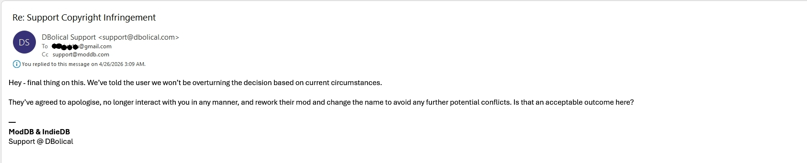
- The SISKI author admitted on Discord that he studied the AlifePlus code and "made an identical one" using an AI agent (screenshots ↓)
- He told his AI to copy the architecture — the AI instruction files are still in his git history (deleted 17 hours after use) (evidence ↓)
- His mod had NONE of these features until 5–7 days after AlifePlus source code was published (timeline ↓)
Summary
AlifePlus and xlibs were built from scratch starting autumn 2025. The private GitHub repository has 265 commits from December 2025 through April 2026. The source code was published so that other modders could use it, build on it, and integrate with it. Within days, the published source was fed into an AI agent and used to replicate the design in a competing mod.
SISKI ALIFE (by GitHub user qkff99) contains architecture and code copied from xlibs and AlifePlus (by Damian Sirbu) without attribution, in violation of their license. The evidence below shows what was copied and how, with side-by-side code comparisons.
Actions taken:
- DMCA Takedown Notice filed with GitHub Trust & Safety (Ticket #4214814, revised April 3) — identifies infringing files, bus references, and the foundational nature of the copied architecture. Under review.
- Abuse Report filed with GitHub Trust & Safety — documents coordinated harassment, organized campaign to "strike, shame, ban, ruin"
- Terms of Service violation report submitted to ModDB — coordinated downvote campaign confirmed by ModDB staff, warnings and access restrictions issued to qkff99
| Finding | Evidence | Section |
|---|---|---|
| Author admitted copying | Discord: "looked at his reactive model and made an identical one" | ↓ |
| AI plans prescribe AlifePlus architecture | Commit b026c90: plan.md + plan_stage2.md, deleted 17h later | ↓ |
| Event bus clone (5/5 API functions) | siski_bus.script matches all functions, data structure, and algorithm with zero prior history. | ↓ |
| 7 architectural patterns copied | Bus, callbacks, producer/consumer, throttle, init, bridge, factory -- none existed in SISKI 0.9.4.1. | ↓ |
| All patterns appeared in 5–7 days | AlifePlus source published Mar 18. SISKI refactor Mar 23–28. | ↓ |
| v1.0 deepens the same patterns | 3 new modules (Apr 10–11), +6,670 lines. ap_owned_squad now appears in 7 files, with no code removed and no attribution added. | ↓ |
| Code from other authors unattributed | Demonized: preserved analse_mode typo. xcvb: verbatim guard data. | ↓ |
| Coordinated retaliation | Discord call to "strike, shame, ban, ruin". ModDB warnings issued to qkff99. | ↓ |
About the counter-claim: qkff99 and associates claim AlifePlus stole from SISKI. This is false. The first AlifePlus commit was December 28, 2025. SISKI's first commit was January 24, 2026 — nearly a month later. The reactive architecture was created January 5. SISKI added reactive architecture March 23. Git logs from both repositories prove this.
Verify it yourself (5 commands):
# Clone the archived SISKI repository
git clone https://github.com/qkff99/siski && cd siski
# 1. See the deleted AI plans that prescribe the AlifePlus architecture
git show b026c90:plan.md | head -20
git show b026c90:plan_stage2.md | head -40
# 2. See the event bus clone (zero prior history)
git log --all --follow -- gamedata/scripts/siski_bus.script
# 3. See the old SISKI v0.9.4.1 (no squad callbacks, no bus, no reactive architecture)
git show 74a1fbd:gamedata/scripts/siski_core.script | grep RegisterScriptCallback # last commit before refactor
# 4. See the new SISKI (all AlifePlus patterns)
git show 6e0fb89:gamedata/scripts/siski_core.script | grep RegisterScriptCallbackWhat needs to happen:
- Remove cloned code (
siski_bus.script,siski_ap_bridge.script) and all reverse-engineered internals - Add attribution to AlifePlus/xlibs where design patterns are used, per the license terms
- Cease coordinated negative actions (downvote campaigns, false accusations, platform manipulation)
- If the above is not feasible: takedown of the infringing repository and ModDB page
git clone --mirror and archived as a git bundle on 2026-03-29, 2026-03-30, and 2026-04-12 (to capture v1.0). This includes the deleted AI plans, every commit referenced in this report, and the full history of all branches. All commit hashes, timestamps, and file contents cited below are verifiable from the archived copies.
The Author Admitted It
Discord: describes studying and replicating the architecture
When confronted by an independent community member about the code similarities, qkff99 (as "Kostya Feniks") described the process in his own words:
Community member: "they also write that you stole code"
qkff99: "I processed the Romanian's code docs through my agent with a code breakdown, then looked at his reactive model and made an identical one"
(Original Russian: "ya manifesty rumyna s razborom koda cherez svoyego agenta prognal, potom posmotrel yego reaktivnuyu model' i sdelal takuyu zhe")
"it's really more profitable than a loop with budgets"
"and by the way I knew they'd throw shit at me for this"
"I don't hide it"
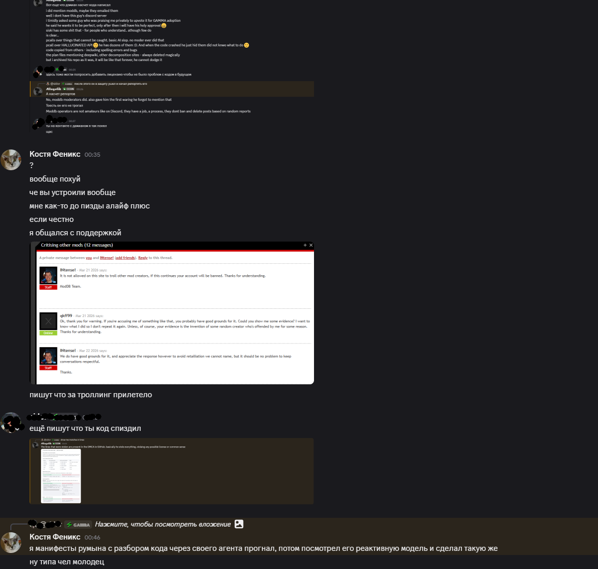

Full Russian text visible above. Translation verified.
Discord: "~95% vibe coded"
"siski is vibe coded too, ~95% maybe, but shhh..."
"I'm not a coder and never was"
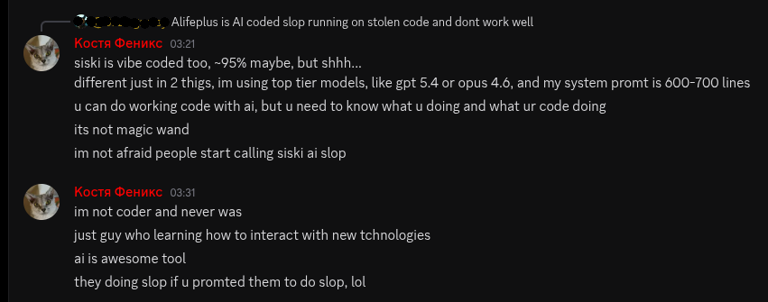
ModDB: admits using the AlifePlus code analysis
After evidence of code copying was presented on Discord and ModDB issued warnings for slander and harassment, qkff99 edited the SISKI mod page description to include:
"BIG thanks to Damian for big amount of reviews SISKI's codebase he posted in his Anomaly mod-posting topic, i used it to make SISKI better and faster and compatible with his ALIFE PLUS."
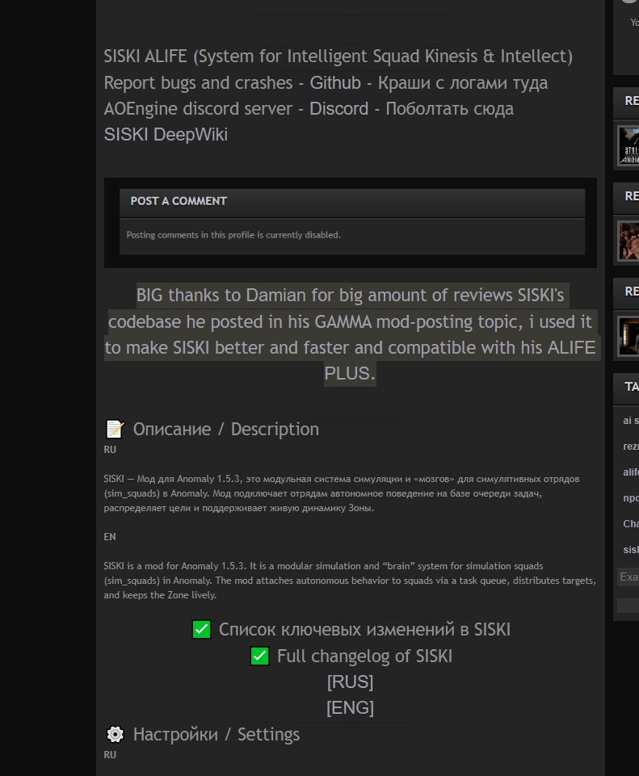
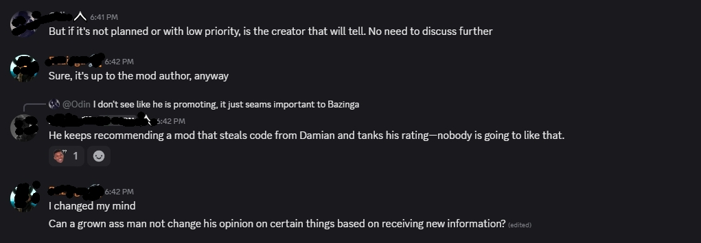
Timeline and License
e779f45) → xbus.script created (Jan 16, commit a3dde90) — 8 days before SISKI's first commit.
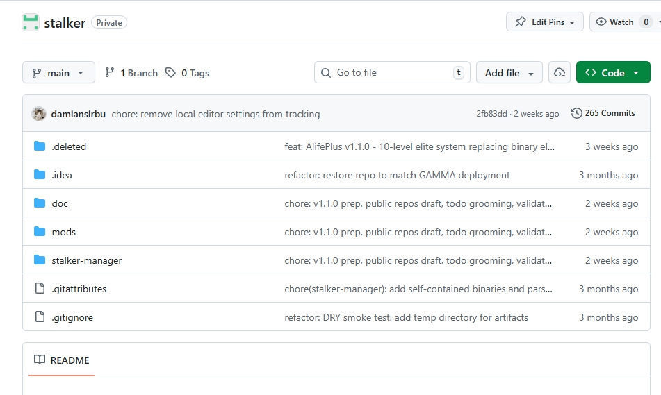

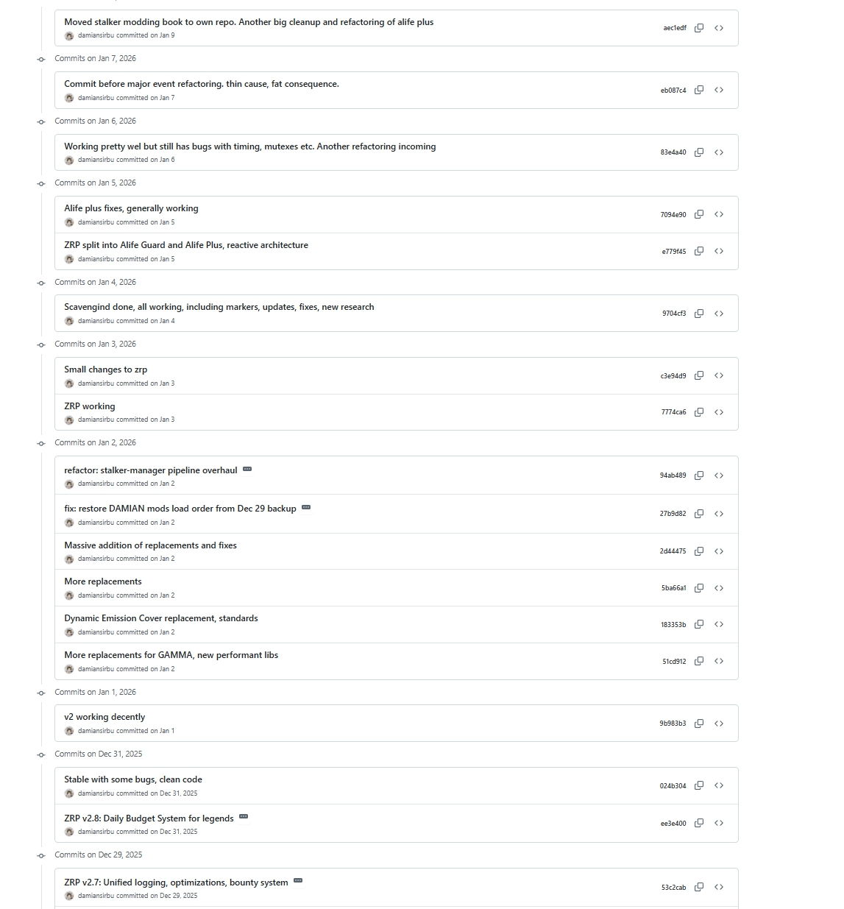
| Date | AlifePlus / xlibs | SISKI | License in effect |
|---|---|---|---|
2025-12-28 | First commit in private monorepo (610a1ed) | — | — |
2026-01-05 | Reactive architecture created (e779f45) | — | — |
2026-01-16 | xbus.script created (a3dde90). No-derivatives license added (b443530) | — | — |
2026-01-24 | — | qkff99 creates SISKI (a9e0591) | — |
2026-01-28 | — | cb7b9c8 copies Demonized's code with preserved analse_mode typo | — |
2026-03-11 | — | qkff99 adds GPL-3.0 LICENSE with copyright holder placeholder unfilled | — |
2026-03-12 | Published on ModDB under Proprietary License | v0.9.4.1 released, using an actor_on_update loop with no bus or squad callbacks. | Proprietary |
2026-03-18 | Source published on GitHub (0467946, 48c9e10). Architecture.md visible. | — | Proprietary |
2026-03-23 | — | b026c90 "big fkin refactoring" — bus clone, callback rewrite, AI plans naming AlifePlus architecture | Proprietary |
2026-03-24 | — | 885cea0 deletes plan.md + plan_stage2.md — 17 hours after creation | Proprietary |
2026-03-25 | — | cbaf038 "new performance feature" — adds off-level skip throttle | Proprietary |
2026-03-28 | — | 6e0fb89 "0.9.5 update" — siski_ap_bridge.script reverse-engineers AlifePlus internals | Proprietary |
2026-03-29 | License changed to PolyForm Perimeter | qkff99 admits copying on Discord | PolyForm Perimeter |
License violations
The Proprietary License v1.0 (in effect March 18–29, when all copying occurred) stated:
Section 4(a): "You may not modify the software, create derivative works, merge the software into other software"
Section 4(c): "reverse engineer, decompile, or disassemble the software for the purpose of creating competing or substantially similar software"
Section 5: "Creating software that reproduces or substantially resembles the software's design, structure, architecture, methodology [...] is a violation of this license, regardless of whether source code was directly copied"
The PolyForm Perimeter License (current, March 29–present) continues to prohibit competing use, replication without attribution, and reverse engineering. It permits addons and extensions that depend on the software with attribution — the legitimate path that was available and rejected.
| License | Period | Requirement |
|---|---|---|
| Proprietary s4(a) | Mar 18–29 | No derivative works — bus + architecture is derivative |
| Proprietary s4(c) | Mar 18–29 | No reverse engineering — AI decomposition of source |
| Proprietary s5 | Mar 18–29 | No reproducing design — reactive pipeline replicated |
| PolyForm Perimeter | Mar 29–present | Prohibits competing use, replication without credit, and requires visible attribution — all three terms were broken with zero attribution across all files |
Grep across all SISKI .script files (32 at 0.9.5, 33 at 1.0), config files, README, changelog, and LICENSE for: Damian, Sirbu, AlifePlus, xlibs, xbus, xsmart. Result: zero matches. SISKI's own GPL-3.0 LICENSE (commit b83ddd0) has the copyright holder placeholder still unfilled: <name of author>.
Note on GPL-3.0: qkff99 released SISKI under GPL-3.0, but you cannot GPL code you do not own the copyright to. Derivative works of proprietary/PolyForm-licensed code cannot be relicensed under GPL without the original author's permission. The GPL license on SISKI is invalid for all code derived from xlibs and AlifePlus.
Evidence: Design-by-Design Comparison
Each subsection below shows one design pattern copied from AlifePlus/xlibs. For each pattern, three columns are shown where applicable:
- AlifePlus/xlibs — the original code (published March 18)
- SISKI deleted plan — the AI instruction that described what to copy (created March 23, deleted March 24)
- SISKI 0.9.5 — the resulting code (March 23–28)
Every pattern shown below did not exist in SISKI 0.9.4.1 (March 12).
3a. Event Bus Clone (xbus → siski_bus)
In plain English: An event bus lets different parts of a mod send and receive messages. Every modder builds theirs differently. The xbus implementation uses 5 specific functions and tracks subscribers by string name in an ordered list — an unusual design choice. SISKI's bus has the exact same 5 functions, the exact same unusual design, and appeared fully formed in a single commit with zero prior development history.
A search across thousands of mods in the STALKER modding ecosystem found that xbus is the only named-subscriber pub/sub event bus. No other mod implements a subscribe/unsubscribe/publish system with string-keyed dedup and ordered subscriber arrays.
-- 5 API functions:
subscribe(event, callback, name)
unsubscribe(event, name)
publish(event, data)
count(event)
has(event, name)
-- Data structure:
subs[#subs + 1] = {
callback = callback,
name = name
}API fixed:
subscribe/unsubscribe/publish
for bus and
schedule/cancel/reschedule
for keyed timers
siski_core to become thin
bootstrap and publisher-- 5 API functions:
subscribe(event, name, fn)
unsubscribe(event, name)
publish(event, payload)
count(event)
has(event, name)
-- Data structure:
list[#list + 1] = {
name = name,
fn = fn
}5 out of 5 API functions match:
| Function | xbus (commit 0467946) | siski_bus (commit b026c90) |
|---|---|---|
subscribe | :33 (event, callback, name) | :52 (event, name, fn) |
unsubscribe | :52 (event, name) | :73 (event, name) |
publish | :66 (event, data) | :92 (event, payload) |
count | :105 (event) | :120 (event) |
has | :117 (event, name) | :125 (event, name) |
Identical algorithm — the subscribe function in both mods performs the same 4 steps in the same order. Annotated line-by-line:
-- STEP 1: ensure array exists for this event
subscribers[event] = subscribers[event] or {}
-- STEP 2: reject if name already registered
if find_subscriber_index(event, name) then
return false -- ^ same return
end
-- STEP 3: append record with .name key
local subs = subscribers[event]
subs[#subs + 1] = {
callback = callback,
name = name -- ^ same .name field
}
-- STEP 4: confirm success
return true -- ^ same return-- STEP 1: ensure array exists for this event
local list = self.subscribers[event]
if not list then
list = {}
self.subscribers[event] = list
end
-- STEP 2: reject if name already registered
for i = 1, #list do
if list[i].name == name then
return false -- ^ same return
end
end
-- STEP 3: append record with .name key
list[#list + 1] = {
name = name, -- ^ same .name field
fn = fn
}
-- STEP 4: confirm success
return true -- ^ same returnSix design decisions unique to xbus, all replicated:
- String
.namefield as subscriber dedup key (not callback reference, not numeric ID) - Array-of-records storage (not name-keyed hash map — an unusual choice that makes lookup O(n) instead of O(1))
subscribe/unsubscribe/publish/count/has— this exact 5-function vocabulary- Boolean returns from subscribe/unsubscribe (
trueon success,falseon duplicate/missing) - Numeric delivered count from publish (returns integer count of calls made)
- Nil payload defaulted to
{}before dispatch
The file has no development history. git log --all --follow -- gamedata/scripts/siski_bus.script shows exactly one commit: b026c90. No prior bus, pub/sub, or event system code existed in any SISKI file before this commit. The file appeared fully formed at 159 lines alongside AI plans that describe its API.
100 references across 16 files (as of v1.0; 93 across 15 at 0.9.5). The bus is the communication layer for the entire mod: siski_core publishes to it, siski_memory, siski_mutants, siski_base_filler, siski_trade, and every other module subscribes to it. Removing siski_bus.script would break SISKI.
3b. Callback Architecture: squad_on_update, enter/leave_smart, forwarder factory
In plain English: A callback is a function the game engine calls when something happens (a squad moves, enters a location, etc.). Old SISKI listened for 5 events, mainly "the player's screen updated" — a brute-force approach. AlifePlus listens for squad-specific events across the entire game world. After the AlifePlus source was published, SISKI switched to the same approach: same events, same roles, same factory pattern to wire them up.
SISKI 0.9.4.1 used 5 callbacks with client-side actor_on_update as its main loop. SISKI 0.9.5 uses 22 callbacks with server-side squad_on_update as the FSM tick and enter/leave_smart as semantic events — the same architecture AlifePlus uses.
Radiant causes fire on A-Life
state changes: smart transitions
and player proximity.
Callbacks: RADIANT_CALLBACKS
(enter/leave/actor_on_smart)
Two A-Life speeds. Off-map:
steady enter/leave_smart.
On-map: sparse transitions.
adapter fills the gap.Canonical decision point for
squad FSM: squad_on_update.
squad_on_enter_smart and
squad_on_leave_smart become
semantic task events.
Strict callback-driven model
without global runtime loops,
without operator queue/drain.RegisterScriptCallback(
"squad_on_update", -- NEW
siski.core.on_squad_update)
RegisterScriptCallback(
"squad_on_enter_smart", -- NEW
siski.core.on_squad_enter_smart)
RegisterScriptCallback(
"squad_on_leave_smart", -- NEW
siski.core.on_squad_leave_smart)
-- actor_on_update REMOVED
-- 22 total callbacks (was 5)Callback registration before and after:
RegisterScriptCallback("actor_on_first_update", ...)
RegisterScriptCallback("actor_on_update", ...) -- MAIN LOOP
RegisterScriptCallback("save_state", ...)
RegisterScriptCallback("load_state", ...)
RegisterScriptCallback("squad_on_npc_death", ...)RegisterScriptCallback("squad_on_update", ...) -- NEW
RegisterScriptCallback("squad_on_enter_smart", ...) -- NEW
RegisterScriptCallback("squad_on_leave_smart", ...) -- NEW
RegisterScriptCallback("squad_on_first_update", ...)
RegisterScriptCallback("squad_on_npc_creation", ...)
-- actor_on_update REMOVED, 22 total (was 5)Callback forwarder factory — both use a factory function that takes a callback name and returns a closure that forwards engine events to the internal bus. This pattern (factory -> closure -> bus publish) does not exist in any other STALKER Anomaly mod:
-- Factory: takes callback name
local function _create_reactive_dispatcher(callback)
-- Returns closure that forwards to bus
return function(...)
_dispatch_reactive(callback, ...)
end
end
-- Usage: one closure per callback type
-- RegisterScriptCallback(callback, dispatcher)
-- _dispatchers[callback] = dispatcher-- Factory: takes callback name
local function make_callback_forwarder(name)
-- Returns closure that forwards to bus
return function(...)
if runtime_enabled_now() ~= true then
return
end
publish_bus_event(name, ...)
end
end
-- Usage: one closure per callback type
-- RegisterScriptCallback("squad_on_update",
-- make_callback_forwarder("squad_on_update"))Same pattern: outer function takes a name, returns an inner function that captures that name and publishes to the bus. SISKI adds a runtime guard; the structure is identical.
3c. Producer/Consumer Pipeline
In plain English: Most STALKER mods handle everything in one big function. AlifePlus separates the work into three layers: one that detects events, one that routes messages, and one that responds. After the AlifePlus source was published, SISKI adopted the same three-layer design.
AlifePlus uses a three-tier reactive architecture that no other STALKER Anomaly mod implements. The standard approach is monolithic callback handlers or iterator loops.
1. Producer
(ap_core_producer)
registers callbacks,
evaluates conditions,
rate-limits, publishes
2. Bus (xbus)
named pub/sub, decouples
3. Consumer (ap_consumer)
subscribes, routes to
priority-sorted handlersengine callbacks
-> internal event bus
-> module subscribers
-> local timers/TTL
siski_core remains only as
engine callback router +
bus publisher. It does not
manage tasks directly.1. Producer (siski_core)
registers callbacks,
forwards via factory,
publishes to bus
2. Bus (siski_bus)
named pub/sub, decouples
3. Consumers (12+ modules)
each call
siski.bus.subscribe()| Tier | AlifePlus | SISKI 0.9.5 |
|---|---|---|
| Producer | ap_core_producer.script — registers callbacks, forwards via _create_reactive_dispatcher | siski_core.script — registers callbacks, forwards via make_callback_forwarder |
| Bus | xbus.script — publish/subscribe with named dedup | siski_bus.script — identical API, identical data structure |
| Consumers | ap_consumer.script — centralized, subscribes to bus | 12+ modules each call siski.bus.subscribe() |
3d. Off-Level Throttling
In plain English: The game simulates hundreds of squads across ~30 maps, but the player is only on one map. AlifePlus reduces processing for squads on other maps so the player's map gets priority. SISKI 0.9.4.1 had no such optimization. After the AlifePlus source was published, SISKI added the same concept with the same level-comparison logic.
AlifePlus classifies every event as on-map or off-map and throttles the unfavored side using a Bresenham integer ratio gate. SISKI 0.9.4.1 had no concept of on-map vs off-map and no level-based throttling.
-- ap_core_producer :241-248
local on_map = squad.online
if not _alife_ratio_gate(
on_map, _radiant_ct) then
return -- off-map throttled
end
-- Bresenham integer ratio :56-86
-- on-map: always admitted
-- off-map: throttled by ratio
-- MCM configurableAppeared 2 days after plan
in commit cbaf038 (Mar 25),
labeled "new performance
feature"-- siski_core :308-341
local actor_level =
current_actor_level_name()
local squad_level =
now_level_name_by_gvid(
squad.m_game_vertex_id)
-- Skip counter
-- on-level: always processed
-- off-level: skip N updates
-- MCM configurableThe mechanism differs (Bresenham ratio gate vs integer skip counter) and off-level throttling is a generic optimization idea. What makes this notable is timing and context: SISKI 0.9.4.1 had no concept of on-map vs off-map processing. The feature appeared 7 days after AlifePlus published the same concept, in the same refactor that copied the bus and callback architecture. In isolation this would not be evidence; combined with the other patterns it fits the same source.
3e. Two-Phase Initialization
In plain English: STALKER mods need to start up in a specific order — some things can only happen after the game world fully loads. AlifePlus splits startup into two phases: register first, then activate once the world exists. SISKI 0.9.4.1 had no such split. After the AlifePlus source was published, SISKI adopted the same two-phase pattern. Note: using actor_on_first_update as a deferred init point is a known Anomaly pattern — several mods do it. What is notable here is that SISKI added it in the same commit that copied the bus and callback architecture, and the deleted AI plan explicitly describes the two-phase bootstrap.
Phase 1: on_game_start
registers engine callbacks.
Does NOT subscribe to bus.
Phase 2: actor_on_first_update
Game world + actor exist.
Producer subscribes to
engine callbacks.
Consumer subscribes to bus.actor_on_first_update and
load_state no longer initiate
gameplay bootstrap wave across
all squads. Only init/hydration
for topology/index/UI layers
is allowed.-- on_game_start():
RegisterScriptCallback(
"actor_on_first_update",
siski.core.on_first_update)
-- registers callbacks only
-- on_first_update():
_bootstrap_enabled_runtime()
-- subscribes and initializes3f. AlifePlus Internals Reverse-Engineered
In plain English: AlifePlus has internal bookkeeping — which squads it controls, where they are going, when they were assigned. This data is private: no public API exposes it. SISKI's bridge file reaches directly into these private data structures by name, reads the field names character-for-character, and copies private function names that can only be discovered by reading AlifePlus source code.
siski_ap_bridge.script (486 lines, commit 6e0fb89, March 28) accesses AlifePlus internal data structures that are not part of any public API:
Reads private tracker fields:
_ap_scripted_squads table)_ap_scripted_squads[squad.id] = {
scripted_target = name,
target_smart_id = smart.id,
tracked_at = xtime.game_sec(),
on_arrive = opts.on_arrive,
on_arrive_args = opts.on_arrive_args,
}tostring(ap_data.scripted_target or "-")
.. "|"
.. tostring(tonumber(ap_data.target_smart_id) or 0)
.. "|"
.. tostring(ap_data.tracked_at or 0)
.. "|"
.. tostring(ap_data.on_arrive or "-")Access is via rawget(_G, "ap_alife_tracker") — bypassing module encapsulation to reach internal mutable state.
Verbatim faction string copied from xsmart:
local ALL_FACTIONS_FC = "army, bandit, csky, dolg, ecolog, freedom, killer, monolith, stalker, renegade, greh, isg"local AP_ALL_FACTIONS_FC = "army, bandit, csky, dolg, ecolog, freedom, killer, monolith, stalker, renegade, greh, isg"12 factions, identical order, character-for-character. This order is not alphabetical and not from any LTX config file. Every other mod in Anomaly modding that lists factions uses a different order:
| Mod | Faction order |
|---|---|
| xsmart (Damian) | army, bandit, csky, dolg, ecolog, freedom, killer, monolith, stalker, renegade, greh, isg |
| siski_ap_bridge | army, bandit, csky, dolg, ecolog, freedom, killer, monolith, stalker, renegade, greh, isg |
| Vintar0 Warfare | stalker, bandit, csky, dolg, freedom, killer, army, ecolog, monolith, renegade, greh, isg |
| ZCP (smr_pop) | stalker, bandit, csky, duty, freedom, merc, army, ecolog, monolith, renegade, greh, isg, zombied |
| xcvb Guards | stalker, dolg, freedom, csky, ecolog, killer, army, bandit, renegade, monolith, greh, isg |
Squad field sequence copied from xsquad:
Individual fields like scripted_target are standard engine usage. But xsquad groups them into a specific 4-field sequence: scripted_target -> rush_to_target -> assigned_target_id -> current_action. Other Anomaly mods use different sequences (Warfare sets __lock first, uses "" instead of a name, and sets current_target_id). SISKI uses xsquad's exact 4-field sequence, inlined across 8 files:
squad.scripted_target = name -- 1
squad.rush_to_target = rush == true -- 2
squad.assigned_target_id = target_smart.id -- 3
squad.current_action = 0 -- 4
squad.scripted_target = nil -- 1
squad.rush_to_target = false -- 2squad.scripted_target = nil -- 1
squad.rush_to_target = false -- 2
squad.assigned_target_id = nil -- 3
squad.current_action = 0 -- 4For comparison, Warfare's equivalent (sim_squad_warfare.script :935) uses a different sequence: current_action -> scripted_target -> current_target_id -> assigned_target_id, and prefixes with __lock = true. The sequence 1-2-3-4 is xsquad's. Inlined across 8 SISKI files instead of calling xsquad.release_squad().
ap_owned_squad — reverse-engineering AlifePlus's internal ownership state:
In plain English: This function probes AlifePlus's internal bridge module to check if AP currently controls a squad. It reads AP's private function names (should_yield_squad, is_ap_owned_squad) by name.
These function names are not documented anywhere — discovering them requires reading AlifePlus source code. The function is copy-pasted identically across 7 separate SISKI files (4 in 0.9.5, 3 more added in 1.0):
local function ap_owned_squad(se_squad, source)
local bridge = siski.ap_bridge
if bridge and bridge.should_yield_squad then
return bridge.should_yield_squad(
se_squad, source) == true
end
if bridge and bridge.is_ap_owned_squad then
return bridge.is_ap_owned_squad(
se_squad) == true
end
return false
endlocal function ap_owned_squad(se_squad, source)
local bridge = siski.ap_bridge
if bridge and bridge.should_yield_squad then
return bridge.should_yield_squad(
se_squad, source) == true
end
if bridge and bridge.is_ap_owned_squad then
return bridge.is_ap_owned_squad(
se_squad) == true
end
return false
endAlso identical in siski_service_filler.script, siski_tasks_registry.script, siski_smart_tasks.script, siski_story_events.script, and siski_story_psy_watchdog.script. Seven copies of the same function that reads AlifePlus's private internal state. The function names should_yield_squad and is_ap_owned_squad come from AlifePlus's internal bridge module — they are not part of any public API. Using them requires reading AlifePlus source code to discover what functions exist and what they are called. The three additional files were added in SISKI 1.0 (April 10–11, 2026).
Summary: all patterns traced to AlifePlus
| Pattern | AlifePlus (Mar 18) | SISKI 0.9.4.1 (Mar 12) | SISKI 0.9.5 (Mar 23-28) | SISKI 1.0 (Apr 10-11) |
|---|---|---|---|---|
| Event bus (pub/sub) | xbus.script, 5 functions | Not present | siski_bus.script, identical | Unchanged |
| Squad callbacks as tick | enter/leave_smart in producer | actor_on_update loop | squad_on_update as FSM tick | +3 new modules on same pattern |
| Enter/leave as semantic events | RADIANT_CALLBACKS | Not used | Semantic task events | Extended to story events |
| Callback forwarder factory | _create_reactive_dispatcher | Not present | make_callback_forwarder | Unchanged |
| Producer/consumer pipeline | producer → bus → consumer | Monolithic loop | core → bus → modules | +3 modules as bus consumers |
| Off-level throttling | Bresenham on/off-map gate | Not present | offlevel_skip_counter | Unchanged |
| Two-phase initialization | on_game_start → actor_on_first_update | Not present | Same two-phase pattern | Unchanged |
| Internals access | Private tracker fields | Not present | rawget into ap_alife_tracker | +3 files consume private fields |
ap_owned_squad copies | Private bridge API | Not present | 4 files | 7 files (verbatim copy-paste) |
xsmart.is_arrived | xsmart.script (xlibs) | Not present | rawget(_G, "xsmart") | Now called by story events arrival |
Code from Other Authors
SISKI ships files from other mod authors. In some cases the code is identical; in others the typo trail proves a direct copy. In both cases, credit is absent.
xcvb's Guards Spawner — identical file, no credit
local spawn_timer = 129600 -- 86400 = 1 day for each smart/squad
local DELETE_ALL_GUARDS = false -- if "true" it will delete all
local debugx = false -- "M" sets update and respawn times...local spawn_timer = 129600 -- 86400 = 1 day for each smart/squad
local DELETE_ALL_GUARDS = false -- if "true" it will delete all
local debugx = false -- "M" sets update and respawn times...Same magic constants, same format strings, same debug key bindings, same 16-entry guard data table with identical smart terrain names, faction assignments, and spawn parameters. These files do not appear in SISKI's git history — shipped only in the ModDB download, outside version control.
SISKI 0.9.5 goes further: the download includes a folder labeled "xcvb's Guards Spawner compatibility" containing guards_spawner.script and emission_guard_patch.script. These are not compatibility patches — they are xcvb's complete files with the header comments rewritten and SISKI bus integration added. The guard data table (all 16 entries, every smart terrain name, every faction, every rank, every spawn count) is preserved verbatim from xcvb's original. No attribution to xcvb appears anywhere in the files or in the SISKI mod description.
Demonized's NPC Looting — preserved typo proves copy
local can_loot_mutants = not is_stalker
and (self.a.analse_mode == "true"
or self.a.enabled == "true"
and MonsterLootCommunities[character_community(npc)])local can_loot_mutants = not is_stalker
and (self.a.analse_mode == "true"
or (self.a.enabled == "true"
and mutant_comms[character_community(npc)]))The typo analse_mode (should be "analyse_mode") exists only in Demonized's code and SISKI's copy, with no other matches found across all STALKER Anomaly mods.
Other shipped third-party files
axr_trade_manager.script is a vanilla Anomaly base file (1,496 lines) modified with 50+ SISKI-specific hooks injected directly into the original code. SISKI ships this modified copy as part of the mod without crediting the Anomaly development team.
Shipping modified base files is common practice in Anomaly modding when no DLTX alternative exists. The issue is not the practice itself but the absence of any attribution — neither xcvb (guards) nor the Anomaly team (trade manager) are credited anywhere in SISKI's repository, README, changelog, or ModDB description.
Feature Set Cloning from Anomaly Mods
Beyond code copying, SISKI's feature list closely mirrors the combined feature sets of several established Anomaly mods. Each of those mods was built by a community author over months or years. SISKI consolidates their ideas into a single package without acknowledgment.
This is not necessarily a license violation — gameplay ideas are generally not copyrightable, and multiple mods can independently implement similar features. But the pattern is notable: SISKI's feature list closely follows what already exists in the Anomaly modding ecosystem, mod by mod.
| SISKI feature | Existing Anomaly mod | Original author | What was taken |
|---|---|---|---|
| Dynamic base filling, squad patrol/wander, smart terrain faction control | Warfare ALife Overhaul | Werejew / Vintar0 | Warfare introduced base filling (spawn faction squads into controlled smarts), random patrol (redirect idle squads to nearby smarts via process_random_patrol), faction expansion (resource-based squad rank scaling), and smart terrain faction control. SISKI's siski_base_filler, siski_service_filler, siski_dynamic_bases, and task types (PATROL, POPULATE, EXPLORE, BASE_CAMPING) reproduce the same feature set across four files. |
| Day/night mutant behavior phases | Dynamic NOCTURNAL Mutants | bmblbx176 | Nocturnal Mutants introduced the concept of mutants behaving differently during night hours (22:00-06:00). SISKI applies the same concept to the same time window. |
| Guards spawner + emission patrol fix | DYNAMIC STALKERS GUARDS | xcvb | Verbatim code copy (documented above). xcvb's complete mod is shipped inside SISKI's download with the header rewritten and SISKI hooks added. All guard data (smart terrains, factions, ranks, spawn counts) is preserved verbatim. |
| Radiant squad patrol between smarts | Semi Radiant AI | xcvb | Semi Radiant AI assigns NPCs to patrol routes between specific smarts using LTX logic configs (90+ hand-crafted config files per level). SISKI's PATROL task type in siski_tasks_registry achieves the same result -- squads cycle between nearby smarts -- but generates the assignments procedurally via script instead of static config. |
| Corpse loot management | NPC Looting (xr_corpse_detection) | Demonized | Direct code copy with preserved analse_mode typo (documented above). |
None of the original authors — xcvb, Demonized, Vintar0, bmblbx176, or Damian Sirbu — are credited in SISKI's repository, README, changelog, code comments, or ModDB description.
AI-Generated Code Artifacts
The SISKI codebase contains patterns consistent with AI-generated code and inconsistent with code written by an experienced STALKER modder. These corroborate the author's admission ("~95% vibe coded", "I'm not a coder and never was"). This section provides supporting context; the copying claims above do not depend on AI detection.
| Marker | 0.9.5 | 1.0 | What it means |
|---|---|---|---|
pcall wraps | 488 | 618 | 1 per 53 lines. Comparable mods use near-zero. Many wraps target C++/luabind methods (:commander_id(), :distance_to(), alife():create()) where pcall cannot catch the error — if the C++ side faults, the engine terminates regardless. These provide false safety that only code generated without understanding the X-Ray runtime boundary would produce. |
_G. prefixed builtins | 305 | 366 | 27 files. Common in sandboxed Lua environments (Roblox, WoW addons). STALKER Lua is not sandboxed — globals like type, pcall, pairs are always available. This pattern is absent from established STALKER mods (Warfare, ZCP, xcvb Guards, Demonized Looting). |
| Hallucinated API calls | 11 | 6 files. Calls engine functions that do not exist (level.is_surge(), surge_manager.get_surge()). Guarded by type(fn) == "function" checks that silently pass — code written by someone who knows the API would not call functions that never existed. | |
| Nil-guards on stdlib | 23 | Guards against string, math, table being nil. These are never nil in Lua 5.1. | |
| Duplicated utility defs | 33 | 40+ | 15+ files. Same function defined identically in multiple files instead of shared module. ap_owned_squad alone is in 7 files. |
== true redundant | 349 | 529 | 22 files. AI does not trust Lua truthiness. |
time_global and time_global() | 34 | 24 | Engine builtin that always exists -- no STALKER mod checks for its presence. |
| Lines changed in 2 days | 23,698 | +7,135/-10,881 in one commit, +4,959/-723 in the next. AI agent output committed in bulk. | |
| Total script lines | ~28,000 | 32,729 | +6,670 lines added in 1.0 across 8 days (Apr 3–11). Three new files total 4,963 lines. |
For comparison: Vintar0's Warfare (21k lines), Demonized's Mugging Squads (1.9k lines), and xcvb's Guards Spawner (353 lines) contain near-zero instances of any of these patterns.
Retaliation and Platform Interventions
Following publication of AlifePlus, a coordinated effort was organized across Discord and ModDB to accuse the AlifePlus author of copying from SISKI.
Coordinated call to action
An administrator of the AOEngine Discord server posted:
"this man literally TAKE the whole code from S.I.S.K.I mod (under GPL license), insert it into claude AI with prompt 'make the same, just change the code' and then LICENSED that code!!"
"Strike his mod, shame him, ban him on the stalker resources, ruin his mod rating on moddb"
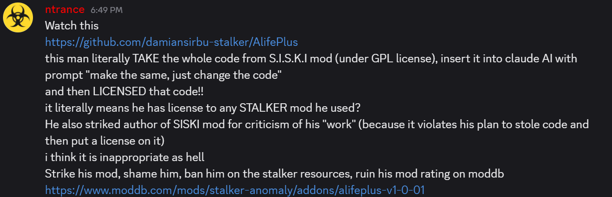
AOEngine Discord administrator calling for coordinated action against AlifePlus.
A member of the same server, NewGrafon, opened a pull request directly on the AlifePlus GitHub repository titled "Доработка лицензии (S.I.S.K.I.)" (License rework for S.I.S.K.I.) and promoted it in the AOEngine Discord #general-ru channel. The PR contained no code changes — its sole purpose was to publicly frame AlifePlus as derived from SISKI on the author's own repository.
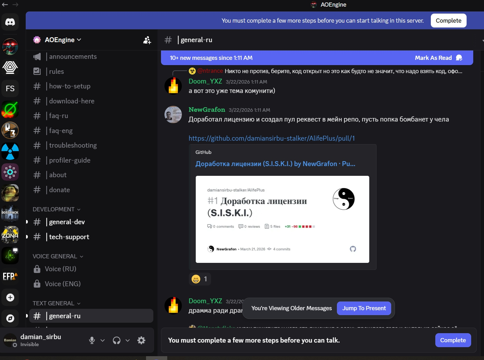
NewGrafon promoting the defamatory PR in AOEngine Discord.
ModDB slander campaign
"So siski mod is an open source code mod, this guy asked claude ai to rewrite an entire code from siski and 'vibe coded' all of it, did the ENTIRE MOD in 2 DAYS and tries to license 'his own code' and strike/ban siski mod."
The git history proves the opposite: AlifePlus development began months before SISKI existed.
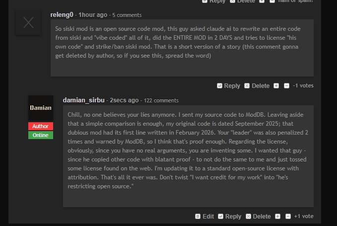
False accusation posted on the AlifePlus ModDB page.
Platform response
- 2026-03-21: ModDB issued qkff99 a warning: "I have issued this user a warning, if it continues please let us know and we will escalate."
- 2026-03-22: ModDB escalated: "We have escalated by restricting access, and at the final warning before a ban will be issued if it persists."
- ModDB/DBolical support confirmed coordinated downvote investigation: "We will remove and ban the false downvote accounts."
- The AlifePlus author was banned from the AOEngine Discord server despite never having posted a message there. The code copying occurred while banned. Unbanned after the copying was done.
- YouTube slander extended to unrelated STALKER videos.
- Personal attacks extended to the author's LinkedIn profile.
While associates publicly accused AlifePlus of being "AI coded slop running on stolen code," qkff99 was privately saying: "I processed the Romanian's code docs through my agent" and "siski is vibe coded too, ~95% maybe, but shhh..."
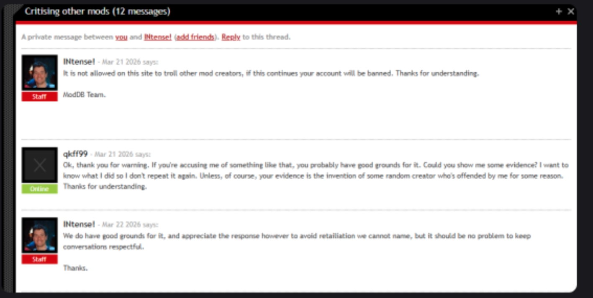
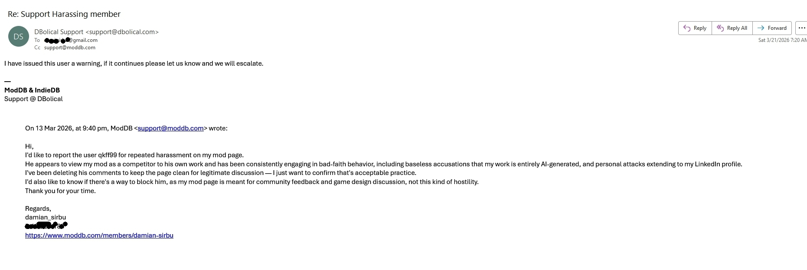
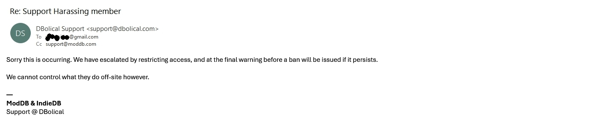
ModDB warnings issued to qkff99: initial warning, escalation, and access restriction.
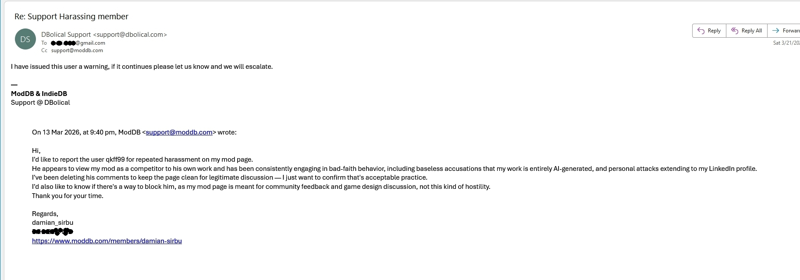
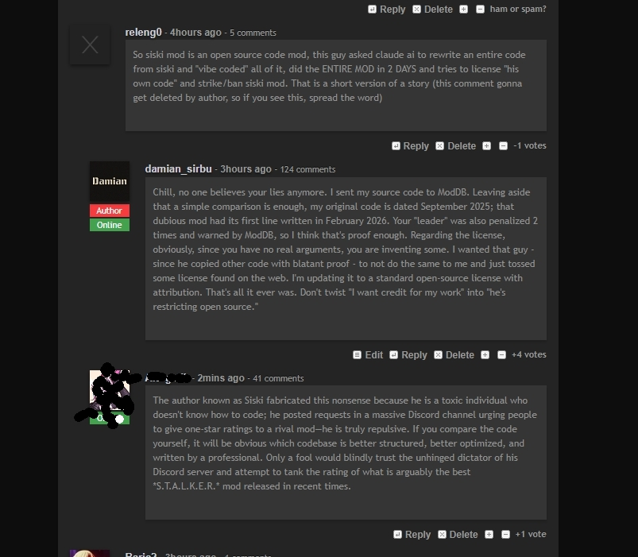
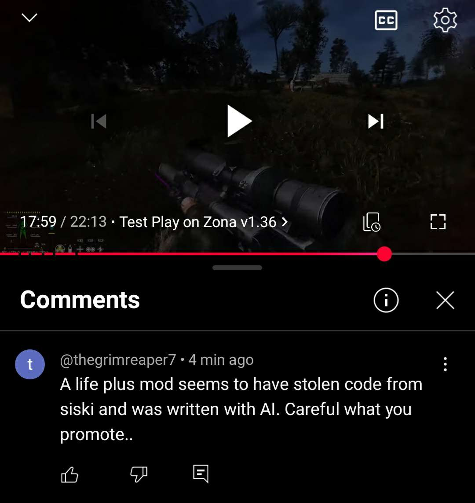
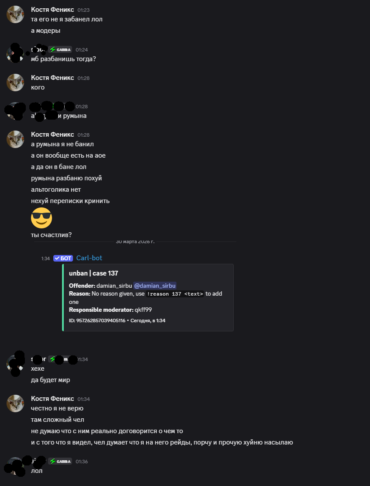
Cross-platform harassment: ModDB report and attacks, YouTube slander, AOEngine Discord ban/unban timeline.
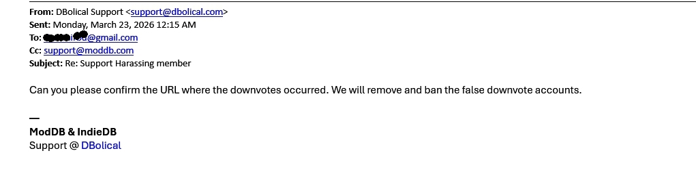
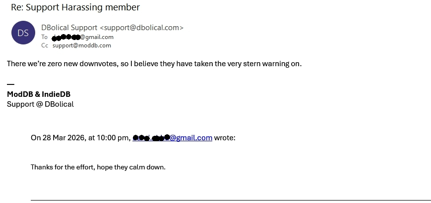
ModDB/DBolical support confirming coordinated downvote investigation and account bans.